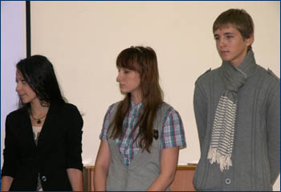
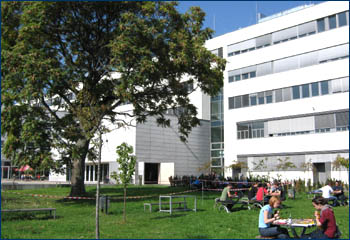
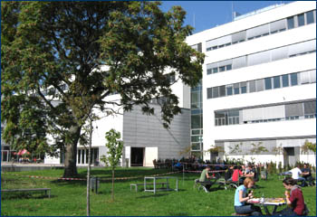
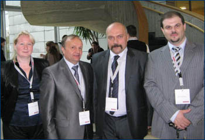
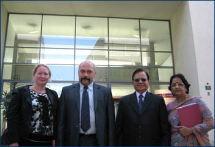
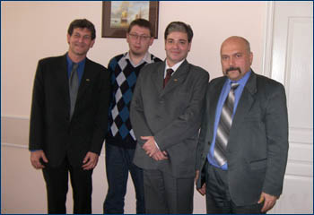
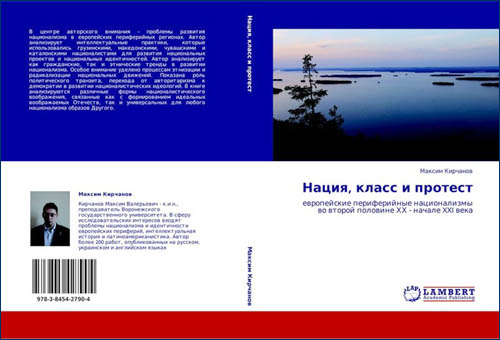
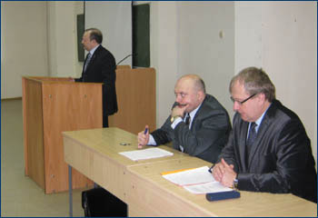

|
Состоялась VI научная конференция "Актуальные проблемы государства и права", организованная факультетом международных отношений и юридическим факультетом.
В ходе работы конференции был затронут широкий круг вопросов, связанных с проблемами и тенденциями развития российского, европейского и международного права, историей права, политическими процессами в современной Европе, развитием международных отношений и региональной интеграции.
В Германии, в международном издательстве LAP Verlag, вышла книга преподавателя Кафедры международных отношений и регионоведения М.В. Кирчанова "Воображая ГДР: интеллектуальная история расцвета и упадка Германской Демократической Республики".
В центре авторского внимания – проблемы истории Германской Демократической Республики. ГДР было одним из двух немецких государств, которые возникли после завершения Второй мировой войны. Политические элиты ГДР предприняли попытку построения совершенно иной и новой политической идентичности и гражданской нации, активно используя ценности и принципы коммунистической идеологии. Несмотря на относительно небольшой по историческим меркам срок существования ГДР в стране возникла уникальная интеллектуальная атмосфера, новая немецкая идентичность. Используя различные нарративные источники, Автор анализирует основные направления развития и трансформации идентичности в Восточной Германии, пытаясь показать уникальную историю подъема, расцвета и упадка Германской Демократической Республики.
На факультете международных отношений прошла Четвертая конференция первокурсников.
Во время работы конференции были представлены доклады, посвященные проблемам развития современных международных отношений, мировой политики и экономики, региональных конфликтов, международному маркетингу и внешнеэкономической деятельности российских регионов.
Иностранные студенты на ФМО
На протяжении осеннего семестра 2011 года на факультете международных отношений в рамках программы по обмену студентами между ВГУ, Университетом прикладных наук г. Грац (Австрия) и Университетом прикладных наук Харц (Вернигероде, ФРГ) проходят обучение 6 студентов из университетов-партнеров.
10 декабря студенты получили сертификаты об обучении в Воронежском Государственном Университете.
Факультет международных отношений получил в дар от Университета Сорокабы (Бразилия) научную литературу и периодические издания на португальском языке. Сотрудничество между двумя университетами будет содействовать развитию бразильских и латиноамериканских исследований на факультете международных отношений.
В 2011 году в издательстве "Научная книга" вышла монография профессора, доктора политических наук А.А. Слинько и аспирантки кафедры международных отношений и регионоведения факультета международных отношений Е.А. Слинько "Украина: особенности становления политической системы".
Авторы анализируют проблемы генезиса современной украинской государственности. Особое внимание уделено проблемам развития политических институтов. В монографии показана специфика политических процессов и особенности политического участия в Украине.
В 2011 году в смоленском издательстве "Посох" вышла книга кандидата исторических наук М.В. Кирчанова "Интеллектуальная история беларуского национализма. Краткий очерк", которая представляет одну из первых попыток краткого изложения истории беларуского национализма в контексте интеллектуальной истории или истории идей.
Автор анализирует генезис беларуского национализма, рассматривает основные концепции беларуских национально ориентированных интеллектуалов. Особое внимание уделено как различным художественным текстам, так и малоизвестным фигурам "второго плана", которые были или являются теоретиками беларуского национализма. В книге анализируется проблемы современной идеологии национализма в Беларуси в контексте постколониальной теории.
В международном издательстве Lambert Academic Publishing (ФРГ) вышла книга доктора политических наук, проф. А.А. Слинько "Неевклидова политика", посвященная исследованию политических процессов в современном мире. Анализируются трансформационные процессы, связанные с формированием новых и альтернативных центров современного мира.
В международном издательстве Lambert Academic Publishing (ФРГ) вышла книга кандидата исторических наук, доцента Вячеслава Ивановича Сальникова, посвященная проблемам и специфики современного революционного процесса. автор прослеживает динамику революционных процессов и описывает их структуру. Особое внимание уделено феномену "цветных революций" и направляемой природе современных революций.
1–3 ноября 2011 года на факультете международных отношений ВГУ прошла школа юного международника.
Учащиеся воронежских школ приняли участие в тематических ролевых играх, адаптированных для школьников мастер-классах преподавателей, магистрантов, студентов факультета международных отношений. В рамках «школы» прошли семинары, посвященные основам делового письма, основам геополитики, основам этики бизнеса, биржевой торговле…

Планируется, что школа юного международника будет проводится на факультете международных отношений на регулярной основе.
24–28 октября на базе Воронежского государственного университета и Факультета международных отношений в г. Воронеже
прошли заседание УМС УМО по профилю подготовки "Мировая экономика" и международная научно-методическая конференция "Современные вызовы мировой экономики и особенности подготовки экономистов-международников".
Открытие совместной магистерской программы
Активно развивающаяся интеграция образовательных систем позволила вывести международное академическое сотрудничество вузов на принципиально новый уровень, предоставив возможность начать проекты по реализации совместных с зарубежным вузом-партнером образовательных программ.
  
В рамках договора о сотрудничестве между Воронежским государственным университетом и Университетом Йоаннеум (г. Грац, Австрия) от 21.04.2009 г. с 5 по 8 октября 2011 г. состоялся визит делегации ВГУ в составе проректора по экономике и международному сотрудничеству проф., д.э.н. Беленова О.Н., декана факультета международных отношений доц., д.э.н. Канапухина П.А., координатора международных программ ФМО ВГУ, зам. декана по НИР доц., к.и.н. Морозовой В.Н. в Университет Йоаннеум (г. Грац, Австрия).

Целью визита стало участие в открытии совместной магистерской программы «Бизнес в развивающихся рынках» и подписание договора о двойном дипломе в рамках обозначенной выше программы. Одновременно с этим было подписано соглашение о сотрудничестве в области разработки магистерских программ между ВГУ, Университетом Йоаннеум (Австрия), Бирланским институтом технологии менеджмента (Индия), Университетом бизнеса и экономика Пекина (Китай), Технологическим Университетом Монтеррей (Мексика).

Совместная магистерская программа предполагает четырехсеместровый период обучения, при этом 3 семестр студенты проводят в вузе-партнере.
Отмечая экономический рост в развивающихся рынках, программа ставит своей целью оценить не только шансы, но и риски международной экономики, что неотделимо от критического анализа экономических стратегий отдельных государств, в том числе с учетом политических и социо-культурных факторов.
Ответственным вузом и одновременно координатором программы выступает Университет прикладных наук Йоаннеум (г. Грац, Австрия). В ВГУ программа стартовала на базе магистерской программы факультета международных отношений «Международный бизнес».
Двухгодичная программа на английском языке (в объеме 120 ECTS), для участия в которой студентам необходимо иметь степень бакалавра «экономики», «международных отношений», «регионоведения», предполагает четыре модуля: дисциплины специализации «Бизнес в развивающихся рынках», междисциплинарные исследования, методологические дисциплины и формирование профессиональных навыков.
Первый модуль включает в себя: «Введение в программу «Бизнес в развивающихся рынках», «Международные финансы», «Лидерство», «Слияние и поглощение в развивающихся рынках». Второй модуль охватывает такие дисциплины как «Политические и экономические институты», «Международная экономика», «Межкультурный менеджмент», «Этика бизнеса», «Управление продажами» и др.
Отдельное внимание уделяется методологическим аспектам подготовки магистров в рамках третьего модуля программы. Здесь студенты приобретают навыки написания магистерской работы, учатся корректно формулировать тему исследования, обосновывать ее актуальность, ставить цель и задачи работы, выдвигать научные гипотезы. Кроме того, отдельные дисциплины модуля посвящены методам маркетинговых исследований и правилам тезисного составления положений, выносимых магистрантом на защиту.
Четвертый модуль состоит из двух иностранных языков, а также дисциплин «Управление конфликтами» и «Международный проектный менеджмент».
В соответствии с достигнутыми договоренностями участники совместной программы первый-второй семестр обучаются в «домашнем» вузе, а третий семестр должны провести в вузе-партнере.
Программа завершается защитой магистерского проекта в ВГУ, а по желанию студента и в зарубежном вузе-партнере.
Для факультета международных отношений – это первый опыт участия в совместной магистерской программе, но далеко не первый проект взаимного сотрудничества с зарубежными вузами. Успешная реализация программ двойного диплома на бакалаврском уровне по схеме «два плюс два» или «два плюс полтора» (два года обучения в ВГУ плюс два/полтора года – в зарубежном вузе) с американскими университетами (Государственный университет Дикинсон, Государственный колледж Чадрон) и университетами Германии (Университет прикладных наук г. Вернигероде) и Франции (Университет Марн-ля-Валле), многочисленные программы обмена студентами для включенного обучения в течение семестра или года стали той стартовой площадкой, которая значительно облегчила процедуру согласования условий совместной магистерской программы.
Но не следует полагать, что после согласования магистерская программа преодолела все сложности в реализации. Новые возможности оборачиваются одновременно и новыми вызовами для факультета. Обеспечение квалифицированного преподавания дисциплин специализации на иностранном языке, организация включенного обучения иностранных студентов, выбравших ВГУ для обучения в рамках совместной программы, согласование процедуры взаимного перезачета дисциплин, выдачи совместных дипломов – относятся к далеко не полному перечню проблем, которые требуют оперативного решения. Стратегический шаг – признание перспективности совместных магистерских программ с точки зрения повышения конкурентоспособности студентов на рынке труда и профессионального роста профессорско-преподавательского состава, повышающих престиж Вуза – уже сделан. Остается главное – совместная работа и постоянная координация проектов.
Первый набор студентов уже состоялся и со стороны ВГУ, и со стороны Университета Йоаннеум, с сентября 2012 года участники смогут пройти включенное обучение в зарубежном вузе в течение семестра, став – при условии успешного выполнения магистерского плана – первыми обладателями двойного диплома в рамках сотрудничества между ВГУ (Россия) и Университетом прикладных наук Йоаннеум (Австрия).
В международном издательстве Lambert Academic Publishing (ФРГ) вышли новые книги преподавателя кафедры международных отношений и регионоведения, к.и.н. М.В. Кирчанова. Книга "Другая культура" посвящена проблемам развития и трансформации современной массовой культуры общества потребления.
В центре исследования "Мы дружбой ленинской сильны" – проблемы развития национализма и идентичностей в СССР.

В международном издательстве Lambert Academic Publishing (ФРГ) вышла книга доцента кафедры международных отношений и регионоведения, к.и.н. С.И. Дмитриевой "Оценка Советского Союза германскими социал-демократами в эмиграции", которая охватывает важный период в истории немецкой социал-демократии с 1933 по 1945 год.
В международном издательстве Lambert Academic Publishing (ФРГ) вышла книга преподавателя кафедры международных отношений и
регионоведения, к.и.н. И.В. Форет "Европейская политика Франции в
период президентства Ф. Миттерана", посвященная роли Франции в
развитии европейской интеграции и политики безопасности.
Укрепление российско-бразильского сотрудничества
В рамках соглашения о сотрудничестве, подписанного между Воронежским государственным университетом и Университетом Сорокабы УНИСО (Бразилия) в июне 2010 г., состоялся визит преподавателей Университета Сорокабы Пауло Эдсона и Маурицио Мичелетти на факультет международных отношений сроком с 19 сентября по 29 сентября 2011 г.

Целью визита являлось чтение курса лекций по истории, культуре Бразилии и современной социально-экономической ситуации в Федеративной Республике для студентов ФМО, а также обсуждение путей дальнейшего сотрудничества с бразильскими партнерами в рамках заключенного в 2010 г. межуниверситетского договора.
Зарубежные коллеги провели следующие лекции:
- «История и культура Бразилии» для студентов 1 курса направления «Международные отношения» и 2 курса направления «Регионоведение»;
- «Социально-экономическая ситуация в Бразилии» для студентов 2 курса направления «Международные отношения», 3 курса направления «Международные отношения» и 4 курса направления «Регионоведение»;
- «Документальные фильмы об основных финансовых центрах Бразилии» магистрам 1 и 2 курса, а также аспирантам факультета международных отношений.
Во время визита были организованы встречи с администрацией ВГУ и факультета международных отношений, где обсуждались перспективы дальнейшего развития сотрудничества ВГУ и Университета Сорокабы. В рамках беседы с проректором по экономике и международному сотрудничеству О.Н. Беленовым рассматривались новые направления сотрудничества в форме обмена не только студентами, но и преподавателями.
В ходе официальной встречи с деканом ФМО доц., д.э.н. Канапухиным П.А., заведующим кафедрой международных отношений и региональной политики проф., д.п.н. Слинько А.А. и заведующим кафедрой международной экономики и внешнеэкономической деятельности доц., к.э.н. Лыловым А.И. обсуждались планы совместных научных публикаций.
Были организованы официальные визиты в Торгово-промышленную палату Воронежской области, Управление уполномоченного Министерства экономического развития и торговли.
План визита предусматривал также изучение русского языка.
В культурную программу визита входило посещение музея истории ВГУ, Краеведческого музея, музея им. Крамского, Театра оперы и балета, экскурсия по городу Воронеж.
В международном издательстве LAP Verlag (ФРГ, Саарбрюккен), специализирующимся на публикациях научной литературы, в 2010–2011 годах вышли новые книги сотрудников Факультета международных отношений Воронежского государственного университета, посвященные проблемам новой и новейшей истории Европы.

В центре авторского внимания – широкий круг проблем от военной истории и истории военнопленных до проблем развития национализма в европейских периферийных регионах и современной массовой культуры.
С 11 по 14 мая 2011 года в г. Киеве (Украина) находилась делегация Воронежского Государственного Университета в составе проректора по стратегическому развитию и интеграции Е.Е. Чупандиной, декана факультета международных отношений, д.э.н. П.А. Канапухина и заведующего кафедрой международных отношений и регионоведения проф., д.полит.н. А.А. Слинько.
Состоялись встречи и переговоры с Директором Института журналистики Киевского Национального Университета им. Т.Г. Шевченко В. Ризуном, Ректором Национальной Академии Управления С.А. Ерохиным, проректором Киевского Национального Университета по международным связям П.А. Бехом.
По итогам визита было заключено соглашение о сотрудничестве между Факультетом международных отношений ВГУ и Институтом журналистики КНУ им. Т.Г. Шевченко. Начата подготовка к заключению договора о сотрудничестве между Воронежским Государственным Университетом и Киевским Национальным Университетом им. Т.Г. Шевченко. Кроме этого был подписан Протокол о сотрудничестве с Национальной Академией Управления на 2011–2012 год.
В дни весенних школьных каникул на факультете международных отношений проходила «школьная практика». В числе участников этого мероприятия была ученица 11 класса МОУ СОШ № 5 им. Феоктистова (г. Воронеж) Архипова Софья Олеговна.
Софья посещала занятия по расписанию студентов факультета международных отношений (специальность «международные отношения») и оставила свой отзыв:
О возможности пройти школьную практику в университете я услышала на Дне открытых дверей и решила походить на лекции, немножко окунуться в бурную студенческую жизнь. Но я даже представить не могла, что это будет так интересно и познавательно!
Во-первых, мне очень повезло с курирующими студентками: девчонки были очень активные, позитивные, сразу ввели меня в курс дела, показали что, где, и я могла обратиться к ним за помощью любой момент. Во-вторых, я познакомилась со студентами разных курсов, они мне рассказали о своей учебе, студенческой жизни, о факультете, и их отзывы еще раз доказали мне, что я сделала правильный выбор, решив поступать на международные отношения. В-третьих, я побывала на лекциях, причем у меня была можно сказать уникальная возможность: я могла выбирать занятия по интересным мне предметам вне зависимости от курса! Больше всех мне запомнились лекции: «Деятели внешней политики России», которую вел Михалев Олег Юрьевич, и «Азиатско-Тихоокеанский регион в системе МО» Морозовой Вероники Николаевны.
Во время присутствия на них я узнала много новых и занимательных фактов, поучаствовала в различных дискуссиях и просто хорошо провела время, благодаря очень интересным рассказам преподавателей. Помимо этого я смогла оценить высокий уровень преподавания языков.
Всем абитуриентам я бы советовала воспользоваться такой возможностью, потому что я смогла познакомиться с будущими преподавателями, завести знакомых – теперь хоть не так страшно будет прийти на 1 сентября, точно определиться с выбранным направлением для поступления и погрузиться хотя бы на время в такую интересную и веселую студенческую жизнь!
Большое спасибо за предоставленную возможность! Я получила огромное удовольствие и много положительных эмоций!
На ФМО ВГУ состоялась региональная научная конференция «Россия и ее регионы в системе международных экономических отношений».
В работе конференции приняли участие 34 докладчика, (в т.ч 7 докторов наук), а также представители Торгово-промышленной палаты Воронежской области (ген. директор торгово-выставочного центра «ВЕТА» И.Ю. Бильтюков) и регионального банковского сообщества (Управляющий Воронежским филиалом «ТрансКредитБанка», д.э.н. С.А. Фабричнов).
Со вступительным словом выступил проректор по экономике и международному сотрудничеству проф. О.Н. Беленов. На обсуждение были вынесены темы, связанные оценкой состояния России и ее регионов (на примере Воронежской и Белгородской областей) в контексте деструктивных процессов современного этапа развития мировой экономики.
Широкие дискуссии развернулись вокруг тем пленарного заседания, связанных с проблемами модернизации экономики России (докладчик доц. д.э.н. Канапухин П.А), с актуальными вопросами развития регионального образовательного пространства (докладчик проф. д.э.н. Беленов О.Н.), перспектив регионального сотрудничества в деятельности ТПП Воронежской области» (докладчик вице – президент ТПП Воронежской области Бильтюков И.Ю.).
В рамках секций наибольший интерес вызвали доклады о современных проблемах мировой экономики и их влиянии на Россию (доклад доцента ФМО ВГУ Д.Г. Ломсадзе), о внешнеэкономических связях Воронежской области в посткризисный период (доклад доцента ФМО ВГУ А.И. Лылова), об особенностях развития экономики впечатлений (доклад преподавателя ФМО Т.М. Бугаевой), об опыте Бразилии по решению проблем региональных диспропорций (доклад доцента ФМО М.В. Кирчанова), о моделях поведения бизнеса на внешних рынках при выборе иностранных партнеров (доклад проф., д.э.н. Белгородского Государственного Технического Университета им. В.Г. Шухова С.В. Куприянова), серия докладов студентов и аспирантов о прогнозах развития экономики России на среднесрочную перспективу (доклад студента 3-го курса ФМО ВГУ А.Д. Шестакова) и отдельных отраслей национальной российской экономики (доклад студентки 4-го курса ФМО ВГУ В.В. Чистяковой и студента 3-го курса ФМО ВГУ М.С. Югова).
На факультете международных отношений состоялась региональная научная конференция по теме «Противоречия глобального развития и модернизация политических систем».
В ней приняли участие профессора, преподаватели, аспиранты и студенты Российской Академии народного хозяйства и государственной службы при Президенте РФ, Воронежского Государственного Архитектурно-Строительного Университета, Воронежской Государственной Лесотехнической Академии, Воронежского Государственного Аграрного университета, Тверского Государственного университета, Воронежского Государственного Университета и др.
На открытии конференции с приветственными словами выступили проректор ВГУ по экономике и международному сотрудничеству проф., д.э.н. О.Н. Беленов, декан факультета международных отношений доц., д.э.н. П.А. Канапухин, завкафедрой международных отношений и регионоведения проф., д.п.н. А.А. Слинько.

Выступление проректора по экономике и международному сотрудничеству
проф., д.э.н. О.Н. Беленова
Выступление заведующего кафедрой международных отношений
проф., д.полит.н. А.А. Слинько
Работа конференции осуществлялась в рамках трех секций «Международные и региональные трансформации: внешне- и внутриполитические аспекты», «Геополитика в исторической ретроспективе и актуальные проблемы мировой политики», «Экономические, социо-культурные и идеологические аспекты глобального развития».
Широкие дискуссии развернулись вокруг тем пленарного заседания, связанных с проблемой нового лидерства в условиях глобальных политических трансформаций (докладчик проф., д.п.н. А.А. Слинько ), а также места и роли России в сложившейся системе международных координат (докладчик проф., д.и.н. А.А. Лютых ).
Выступление проф., д.и.н. А.А. Лютых
В рамках секций наибольший интерес вызвали доклады о политической и экономической ситуациях на Ближнем Востоке (соответственно доклады доцента исторического факультета С.В. Хатунцева и доцента факультета международных отношений ВГУ Д.Г. Ломсадзе), об особенностях инновационных партийных технологий в России (доклад доцента факультета журналистики ВГУ Д.Н. Нечаева), серия докладов относительно исторической ретроспективы геополитических концепций (доклады доцентов ВГАУ Т.П. Малютиной, Г.В. Марри). Ряд докладов был посвящен отдельным аспектам внутри- и внешнеполитического развития Германии. Отдельной темой для дебатов стало также международное академическое сотрудничество в сфере образования с точки зрения оценки сложностей и перспектив реализации академических обменов.
По материалам конференции планируется публикация одноименного сборника статей.
Профессор, доктор политических наук, заведующий кафедрой международных отношений и регионоведения Александр Анатольевич Слинько по итогам опроса читателей журнла "Латинская Америка" решением Ученого Совета Института Латинской Америки РАН награжден Дипломом за статью "Латинская Америка: революционный процесс в условиях глобализации" в номинации "Социальные проблемы".
|